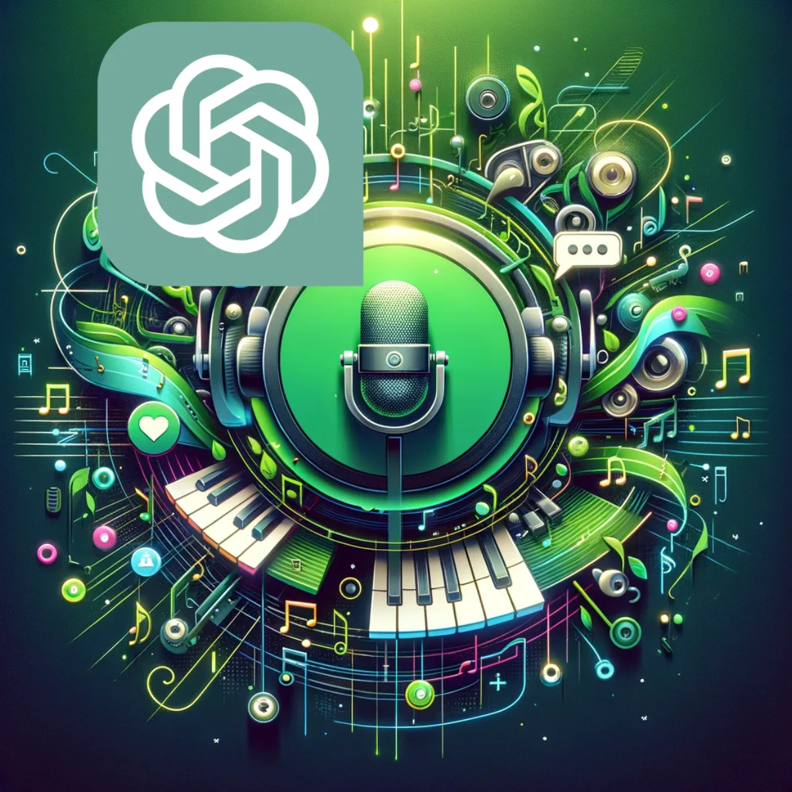
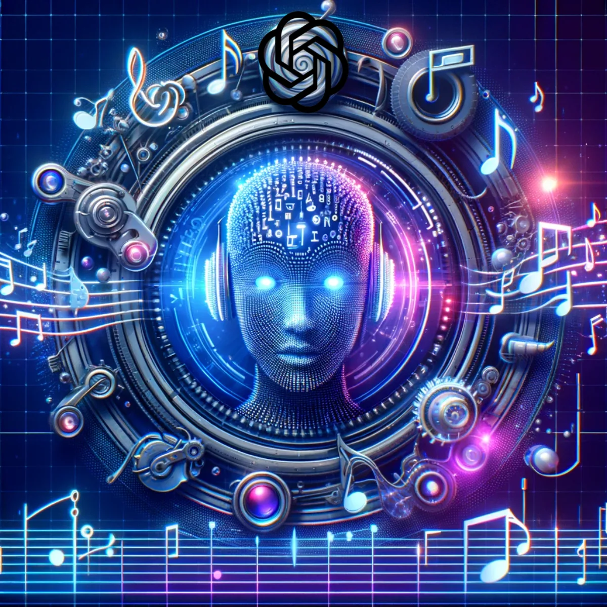

Pathways / Events, music & play
Music Creation
AI-assisted lyrics, songs and music videos: where poetry meets technology and every track still carries the spirit of humanity.

Lyrics crafted by AI, inspired by humanity
Generating Lyrics
Experience the fusion of generative artificial intelligence and human emotion with AI-generated music lyrics. State-of-the-art algorithms delve into the depths of language and sentiment to compose verses that resonate with the soul. Each line is a symphony of words, meticulously curated to capture the essence of your melody. Unlock a realm where poetry meets technology, and every song becomes a narrative that speaks to the heart, crafted by the precision of AI but inspired by the spirit of humanity. You.

Let your lyrics flow with ChatGPT 3.5
ChatGPT 3.5
Dive into the lyrical stream with ChatGPT 3.5, your AI muse for freely composing melodies in words. With its intuitive understanding of rhythm and rhyme, ChatGPT 3.5 transforms your thoughts into verses that resonate. Whether you're crafting the next chart-topper or penning a personal ballad, this tool tunes into your creative frequency, ensuring every line hits the right note. Embrace the AI revolution where technology meets artistry, and your music finds its true voice.

Compose beyond boundaries with Custom GPT-4
Custom GPT-4
Step into the bespoke realm of songcraft with Custom GPT-4, where your unique style meets the pinnacle of AI-driven creativity. While GPT-3.5 lays the foundation, Custom GPT-4 elevates your lyrical journey with an advanced understanding of context, emotion, and the subtleties of your personal flair. You gain a tailored experience, where the AI intricately aligns with your creative process, delivering richer, more complex lyrics that resonate with depth and authenticity. Custom GPT-4 doesn't just generate lyrics; it weaves your thoughts and themes into a tapestry of musical storytelling that's deeply human and profoundly engaging. Embrace the evolution of songcraft with an AI attuned to your artistic pulse, offering a harmonious partnership that transcends the ordinary.

The future soundtrack, composed by AI
Generating Music
Step into the new era of music, where AI becomes a collaborative maestro of melodies. Advanced neural networks analyse beats, rhythms, genres, and harmonies to create unique compositions tailored to your tastes. Whether you're seeking the next chart-topping hit or a bespoke background score, AI now breathes life into notes, offering an endless library of musical possibilities. Embrace the innovation where every chord is a discovery and every beat is a breakthrough, all orchestrated by the intelligent artistry of AI, in collaboration with you and your inspiration. Hear where this leads in the i C infinity music universe.

Where AI composes the future of music
Suno.ai
Dive into the melody of innovation with Suno.ai, your AI-powered maestro, transforming the way music is created. Suno.ai harmoniously blends cutting-edge AI algorithms with the art of music composition, offering an unparalleled platform for artists and enthusiasts alike. Whether you're crafting intricate symphonies or exploring new soundscapes, Suno.ai's intuitive interface and advanced capabilities empower you to bring your musical visions to life. Experience the future of music creation, where your creativity knows no bounds and every note holds the potential for discovery.

AI-crafted music videos that enchant and engage
Generating Music Videos
Witness the revolution in visual storytelling with AI-generated music videos. Blending cutting-edge graphics with the rhythm of music, fine-tuned AI algorithms create captivating visuals that dance to the beat of your song. From abstract artistry to narrative journeys, watch as AI interprets sound into sight, offering a multisensory experience that elevates your music to cinematic heights. Each video is not just watched but felt, as AI transforms the auditory into the visual, crafting an immersive world where every frame is in harmony with your tune. Explore it with platforms like Canva, Invideo.ai, Leonardo.ai, Runway, Pika and Pixaverse.
Keep exploring